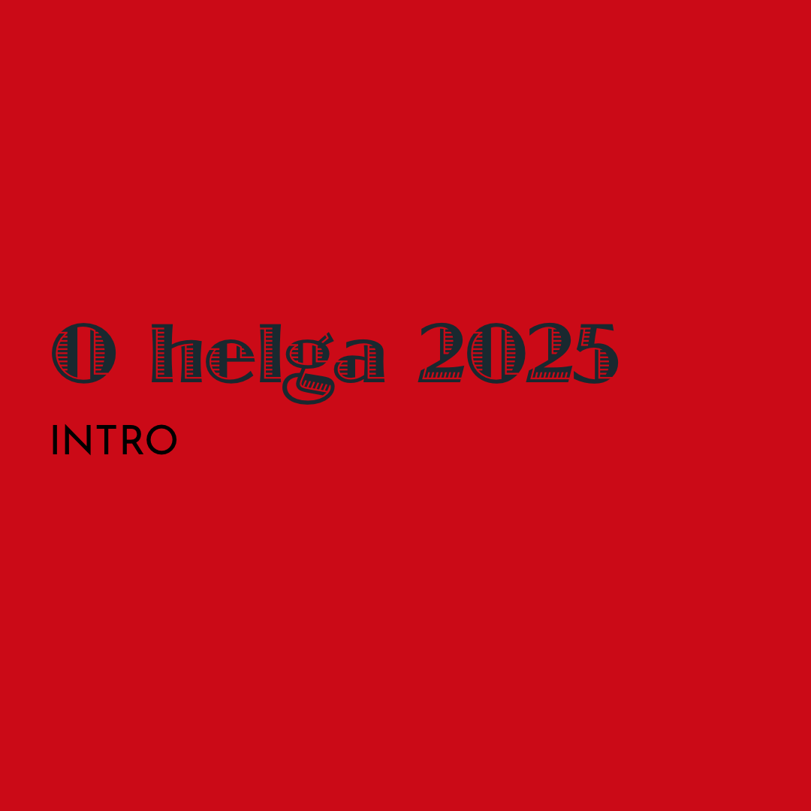

Jo joutui armas aika! Och helt lit jul! Sen myötä alkaa myös monien Roman empire, O Helga julkalender, ei yhtään Sus. I årets julkalender lyfter vi fram nya ord – och till varje ord hittar vi den ”O helga natt”-version som känns helt rizz. Kom och lyssna med!
🎄✨ ✨🎄